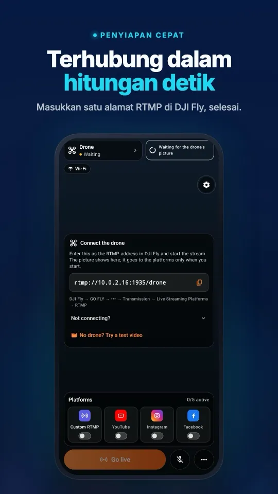
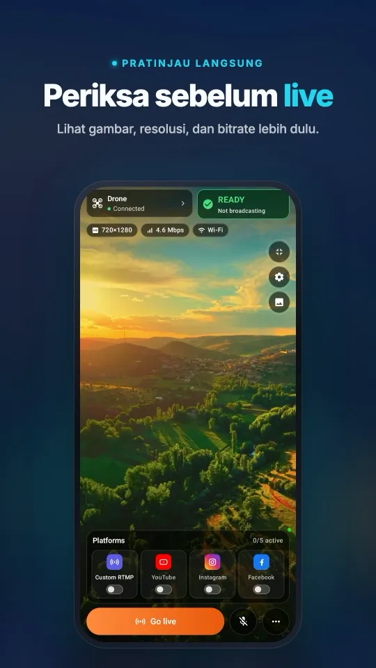
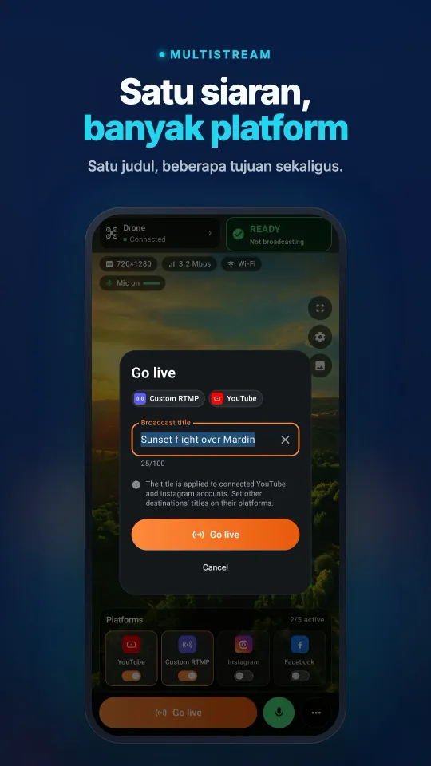
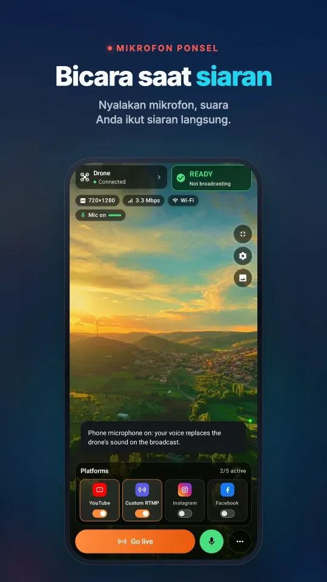
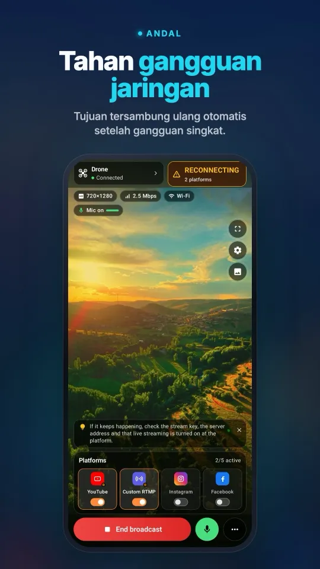

Ubah drone DJI Anda menjadi webcam komputer
Stream My Drone bukan sekadar alat restream. Kamera virtual-nya menyerahkan gambar langsung dari DJI Fly ke komputer Anda sebagai kamera biasa bernama Stream My Drone Camera, sehingga aplikasi apa pun yang punya menu kamera — TikTok LIVE Studio, OBS, Zoom, Google Meet, Microsoft Teams — bisa menampilkan apa yang dilihat drone Anda. Tanpa stream key, tanpa akun streaming.
Ringkasnya
- Stream My Drone menambahkan kamera bernama Stream My Drone Camera ke komputer Anda yang menampilkan gambar langsung drone.
- Aplikasi apa pun yang memungkinkan Anda memilih kamera bisa memakainya: TikTok LIVE Studio, OBS, Zoom, Google Meet, Microsoft Teams, atau studio berbasis browser.
- Tidak perlu stream key atau akun platform — drone cukup menjadi sebuah kamera.
- Kameranya vertikal, 1080×1920 pada 30 fps, dan hanya membawa video; mikrofon Anda pilih di aplikasi yang memakainya.
- Untuk panggilan video lanskap, kirim drone lewat OBS dengan tata letak horizontal 16:9 dan gunakan OBS Virtual Camera.
Apa yang dilakukan kamera virtual
Biasanya gambar langsung drone dikirim ke platform streaming. Kamera virtual menempuh jalur lain: DJI Fly mengirim gambar lewat RTMP ke Stream My Drone di komputer Anda, lalu aplikasi menyerahkannya ke sistem operasi sebagai kamera. Bagi aplikasi lain, drone Anda terlihat seperti webcam yang tercolok ke komputer.
Jadi aplikasi lain itu tidak memerlukan stream key, akun streaming, atau dukungan RTMP. Selama ada menu kamera, drone bisa muncul di sana.
- Nama: Stream My Drone Camera.
- Gambar: vertikal 1080×1920 pada 30 fps. Gambar drone lanskap berada di tengah bingkai dengan bidang hitam di atas dan bawah; tidak ada yang dipotong.
- Suara: tidak ada, dan memang disengaja. Anda memilih mikrofon di aplikasi yang memakai kamera, jadi audio tidak pernah terdengar dua kali.
- Sistem: macOS 13 atau lebih baru (aplikasi harus berada di folder Applications), serta Windows 10/11.
Apa yang bisa Anda lakukan dengannya
Beberapa ide — apa pun yang menerima webcam bisa menampilkan pemandangan dari drone Anda.
- Live di TikTok tanpa stream key. Pilih kamera di TikTok LIVE Studio dan siaran dari sana. Panduan lengkapnya ada di panduan TikTok.
- Buat acara di OBS. Tambahkan kamera sebagai sumber video dan taruh teks, logo, peta, atau kamera wajah Anda di atas gambar udara, lalu siarkan atau rekam dari OBS.
- Tunjukkan lokasi lewat panggilan video. Biarkan klien, tim, atau pihak asuransi melihat atap, lokasi proyek, ladang panel surya, atau lahan secara langsung di Zoom, Google Meet, atau Microsoft Teams, alih-alih mengirim foto setelahnya.
- Berikan tur virtual. Ajak penonton melihat properti, area perkemahan, tempat acara, atau sebuah rute dari udara sambil Anda menjelaskannya.
- Mengajar dan presentasi. Gunakan pemandangan udara dalam pelajaran, webinar, atau presentasi tentang geografi, pertanian, survei, atau dunia penerbangan itu sendiri.
- Bergabung ke studio browser. Studio berbasis browser seperti StreamYard atau Restream Studio biasanya bisa memilih kamera ini seperti webcam lain, jadi drone bisa menjadi salah satu tamu dalam acara multikamera.
Kamera menampilkan gambar drone selama Stream My Drone terbuka dan DJI Fly sedang mengirim. Jika tidak ada gambar yang masuk, kameranya hitam.
Tampilannya di ponsel AndaDari koneksi DJI Fly hingga siaran di beberapa platform, semuanya di satu layar.




Cara mengubah drone Anda menjadi webcam
- Pasang aplikasi di tempat yang tepatDi Mac, seret Stream My Drone ke folder Applications; macOS hanya mengizinkan ekstensi kamera dari sana. Di Windows, pemasang mendaftarkan kameranya.
- Kirim gambar drone ke komputerDi DJI Fly, buka GO FLY → ••• → Transmission → Live Streaming Platforms → RTMP dan tempel alamat yang ditampilkan di tab Siaran aplikasi. Remote dan komputer harus berada di Wi-Fi atau hotspot yang sama. Detailnya ada di panduan RTMP DJI Fly.
- Aktifkan kamera sekaliDi tab TikTok LIVE Studio, tekan Aktifkan kamera virtual — sekali saja. macOS meminta persetujuan satu kali, di System Settings → General → Login Items & Extensions → Camera Extensions.
- Mulai kameraSaat kartu menunjukkan Siap dimulai, tekan Mulai kamera virtual.
- Pilih kamera di aplikasi AndaDi TikTok LIVE Studio, OBS, Zoom, Meet, atau Teams, buka menu kamera dan pilih Stream My Drone Camera. Pilih juga mikrofon Anda di sana.

Tidak ada drone di dekat Anda? Coba dengan berkas video di tab Siaran mengirim klip rekaman melalui jalur yang sama, jadi Anda bisa menyiapkan kamera di aplikasi sebelum terbang.
Panggilan video lanskap: lewat OBS
Kamera bawaannya vertikal, karena TikTok LIVE Studio dan platform yang mengutamakan ponsel juga vertikal. Zoom, Meet, dan Teams dirancang untuk kamera lanskap, jadi tergantung aplikasi dan tata letaknya, bingkai tinggi itu ditampilkan dengan bilah lebar atau dipotong, dan gambar drone jadi kecil. Untuk panggilan lanskap, gunakan integrasi OBS opsional: OBS menerima gambar drone utuh di kanvas 1920×1080.
- Aktifkan OBS WebSocketDi OBS, buka Tools → WebSocket Server Settings dan aktifkan servernya (port 4455 secara default).
- Hubungkan Stream My Drone ke OBSDi tab Lanjutan, di bawah Integrasi OBS opsional, masukkan host, port, dan kata sandi, lalu tekan Simpan koneksi.
- Pilih tata letak horizontalDi tab Siaran, di bawah Gambar dan suara, atur orientasi ke Horizontal 16:9.
- Siapkan sceneSaat video drone sudah masuk, tekan Siapkan scene OBS. Aplikasi membuat scene bernama DJI LIVE, mengatur kanvas OBS ke 1920×1080, dan menyesuaikan gambar drone ke dalamnya.
- Mulai OBS Virtual CameraTekan Mulai kamera virtual di samping Kamera virtual OBS pada kartu yang sama, lalu pilih OBS Virtual Camera di Zoom, Meet, atau Teams.
| Stream My Drone Camera | OBS Virtual Camera | |
|---|---|---|
| Bentuk | Vertikal 1080×1920 | Mengikuti tata letak: 1920×1080 atau 1080×1920 |
| Perlu OBS | Tidak | Ya, dengan WebSocket aktif |
| Overlay dan scene | Tidak | Ya, semua yang ditawarkan OBS |
| Paling cocok untuk | TikTok LIVE Studio, acara vertikal | Zoom, Meet, Teams, acara lanskap |

Tips agar gambarnya bersih
- Pilih satu mikrofon di aplikasi yang memakai kamera. Kamera drone tidak bersuara, jadi tidak ada yang perlu dibisukan.
- Wajar ada sedikit jeda. Gambar berjalan dari drone ke remote, lewat Wi-Fi ke komputer, lalu masuk ke kamera, jadi sedikit tertinggal dari waktu nyata. Itu tidak masalah untuk menunjukkan suatu tempat, tetapi tidak cocok untuk hal yang butuh ketepatan waktu.
- Gunakan jaringan yang stabil. Tautan yang lemah antara remote dan komputer terlihat sebagai gambar tersendat. Hotspot ponsel tepat di samping komputer sering lebih baik daripada router yang jauh.
- 720p itu normal. Remote sering mengirim 720p; kamera menyesuaikannya ke bingkai dan tidak berpura-pura itu 1080p asli.
- Biarkan aplikasi tetap terbuka. Menutup Stream My Drone akan menghentikan kamera.
Jika kamera tidak muncul
- Tidak ada di daftar kamera: mulai kamera virtual terlebih dahulu, lalu tutup dan buka lagi aplikasi yang akan memakainya — banyak aplikasi hanya membaca daftar kamera saat dibuka.
- macOS tidak pernah meminta persetujuan: pastikan Stream My Drone dijalankan dari folder Applications, lalu lihat di System Settings → General → Login Items & Extensions → Camera Extensions.
- Berhenti setelah pembaruan: mengganti aplikasi membuat macOS mematikan kamera lama. Tekan Mulai kamera virtual lagi; tombol itu meminta aktivasi dengan sendirinya. Jika macOS memintanya, mulai ulang Mac.
- Gambarnya hitam: tidak ada video drone yang masuk. Periksa pratinjau di tab Siaran dan alamat RTMP di DJI Fly.
- Browser tidak menampilkannya: izinkan akses kamera untuk situs tersebut dan muat ulang halamannya.
- Windows: kamera bawaan sudah diuji dengan TikTok LIVE Studio, OBS, dan Zoom. Pilih “Stream My Drone Camera” sebagai sumber video.
Pertanyaan
Bisakah drone DJI saya dipakai sebagai webcam?
Bisa. Selama Stream My Drone berjalan dan DJI Fly mengirim RTMP ke sana, drone muncul sebagai kamera bernama Stream My Drone Camera di aplikasi apa pun yang memungkinkan Anda memilih kamera.
Apakah bisa dipakai di Zoom, Google Meet, dan Microsoft Teams?
Aplikasi-aplikasi itu bisa memilih kamera ini seperti webcam lain. Karena kamera bawaannya vertikal, panggilan lanskap akan terlihat lebih baik lewat OBS: siapkan scene OBS dengan tata letak horizontal 16:9 dan pilih OBS Virtual Camera di panggilan.
Apakah saya perlu stream key atau akun streaming?
Tidak. Kamera virtual tetap di komputer Anda dan tidak mengirim apa pun ke platform. Stream key hanya diperlukan saat Stream My Drone sendiri melakukan streaming lewat RTMP.
Apakah kamera virtual membawa suara?
Tidak, hanya video. Pilih mikrofon Anda di aplikasi yang memakai kamera.
Drone mana saja yang bisa?
Drone DJI apa pun yang versi DJI Fly-nya menyediakan RTMP di bawah Live Streaming Platforms. Aplikasi tidak pernah berkomunikasi langsung dengan drone; ia hanya menerima aliran RTMP.
Apakah gratis?
Ya. Stream My Drone gratis dan bersumber terbuka di bawah lisensi MIT, serta tidak berafiliasi dengan DJI, Zoom, Google, atau Microsoft.
Siarkan drone Anda langsung dari ponsel
Stream My Drone untuk Android dan iPhone menerima gambar DJI Fly lalu mengirimkannya ke YouTube, Instagram, Facebook, TikTok, Twitch, Kick, atau server Anda sendiri, ke beberapa sekaligus. Sekali beli, tanpa langganan.

Panduan lainnya
Cara live streaming dengan drone (langkah demi langkah, 2026)
Cara live streaming dengan drone ke YouTube, Instagram, TikTok, atau Facebook: yang dibutuhkan, 4 metode, DJI Fly RTMP dalam 5 langkah, kecepatan internet, dan solusinya.
DJI RC 2 tidak bisa live tanpa mikrofon? Cara mengatasi “No built-in mic in current device”
DJI Fly 1.16 tidak mau memulai live RC 2 tanpa mikrofon. Penyebabnya, apa yang berhasil (mikrofon USB-C, AirPods) dan solusi tanpa perangkat tambahan dengan ponsel Android.
Cara live streaming dengan DJI Flip
Live streaming DJI Flip dengan RC 2, RC-N3 atau RC-N2: pengaturan RTMP di ponsel dan komputer, beda kontrol telapak tangan dan ponsel, bingkai vertikal, dan cek platform.
Cara live streaming dengan DJI Lito X1
Cara live streaming DJI Lito X1 dengan RC 2, RC-N3 atau RC-N2: pengaturan RTMP di DJI Fly, alur ponsel dan komputer, pengaturan platform, serta solusi masalah umum.
Cara live streaming dengan DJI Lito 1
Panduan siaran langsung DJI Lito 1 dengan RC 2, RC-N3 atau RC-N2: pengaturan RTMP di DJI Fly, alur kerja ponsel dan komputer, pengaturan platform, dan solusi masalah.
Cara live streaming dengan DJI Air 3S
Live streaming DJI Air 3S ke YouTube, Instagram, atau Facebook. Pilih remote, sambungkan RTMP DJI Fly ke ponsel atau komputer, lalu periksa gambar yang disiarkan.
Cara live streaming dengan DJI Air 3
Cara live streaming DJI Air 3 ke YouTube, Instagram, atau Facebook: pilih remote, kirim RTMP DJI Fly ke ponsel atau komputer, dan periksa gambar yang disiarkan.
Cara live streaming dengan DJI Mavic 4 Pro
Siarkan DJI Mavic 4 Pro dengan RC 2 atau RC Pro 2 ke ponsel atau komputer. Cek RTMP di DJI Fly, beda mikrofon kedua remote, batas 720p, dan pengaturan platform.
Cara live streaming dengan DJI Mavic 3, Classic, atau Pro
Live streaming DJI Mavic 3, Classic, atau Pro dengan RC-N1 atau RC Pro. Pelajari kenapa DJI RC tidak bisa siaran, plus penerima di ponsel, RTMP desktop, dan batas kualitas.
Cara live streaming dengan DJI Mini 3 Pro
Live streaming DJI Mini 3 Pro dengan RC-N1, DJI Fly di ponsel, dan Stream My Drone di komputer. Pahami kenapa DJI RC versi awal tidak bisa memakai rute RTMP ini.
Cara live streaming dengan DJI Mini 3
Atur live streaming DJI Mini 3 lewat RC-N1 dan DJI Fly ke Stream My Drone di komputer. Cek batasan DJI RC, kualitas tampilan langsung 720p, dan cara tayang di platform.
Cara live streaming dengan DJI Mini 5 Pro
Live streaming DJI Mini 5 Pro dengan RC 2 atau RC-N3. Atur RTMP di DJI Fly, pakai ponsel atau komputer, lalu kirim siaran drone ke YouTube, Instagram, atau Facebook.
Cara live streaming dengan DJI Mini 4 Pro
Cara live streaming DJI Mini 4 Pro dengan RC 2 atau RC-N2: pengaturan lewat ponsel dan komputer, RTMP di DJI Fly, syarat mikrofon, dan pengecekan di platform.
Kenali dan hitung hewan secara langsung dari drone DJI Anda
Stream My Drone mengenali kambing, domba, sapi, kuda, keledai, dan unggas di gambar langsung drone, menandainya di siaran, dan menghitungnya, semua di komputer Anda.
Live streaming RTMP di DJI Fly: pengaturan lengkap
Cara mengatur live streaming RTMP di DJI Fly: letak pengaturannya, alamat yang harus dimasukkan, menghubungkan remote dan komputer, serta cara mengatasi masalahnya.
Kenapa DJI Fly tidak bisa live streaming ke Instagram (dan solusinya)
DJI Fly tidak punya opsi Instagram dan klien RTMP-nya tidak mendukung RTMPS terenkripsi yang diwajibkan Instagram. Ini penyebabnya, dan cara tetap live dari drone DJI.
Cara live streaming dengan DJI Neo
Cara live streaming DJI Neo: mode kontrol yang bisa (ponsel, RC-N3, goggles), RTMP di DJI Fly, dan siaran ke Instagram, TikTok, atau YouTube dengan Stream My Drone.
Cara live streaming dengan DJI Avata 2
Cara live streaming rekaman FPV dari DJI Avata 2: bagikan tampilan Goggles 3 ke DJI Fly di ponsel, siarkan lewat RTMP, lalu live di Instagram, TikTok, atau YouTube.
Siaran langsung dari kamera DJI Osmo ke Instagram, TikTok, dan lainnya
DJI Mimo bisa menyiarkan kamera Osmo Action, Osmo Pocket, dan Osmo 360 lewat RTMP. Kirim ke Stream My Drone untuk live di Instagram, TikTok, dan YouTube sekaligus.
Cara live streaming Osmo Pocket 3 ke Instagram dan TikTok
Cara live streaming DJI Osmo Pocket 3 lewat RTMP dari DJI Mimo ke Instagram, TikTok, dan YouTube sekaligus, serta menjadikannya webcam nirkabel, dengan Stream My Drone.
Cara live streaming kamera Osmo Action ke Instagram dan TikTok
Live streaming DJI Osmo Action 6, 5 Pro, 4, atau 3 lewat RTMP dari DJI Mimo ke Instagram, TikTok, YouTube, dan Twitch sekaligus dengan Stream My Drone. Cara dan pengaturan.
Cara live di TikTok dengan drone DJI
Siaran langsung drone DJI di TikTok dari DJI Fly: dengan stream key TikTok, atau tanpa stream key lewat TikTok LIVE Studio dan kamera virtual. Pengaturan dan solusi masalah.
Cara siaran langsung di Instagram dengan drone DJI
Cara live Instagram dari drone DJI: ambil URL stream dan kunci di instagram.com, kirim aliran RTMP DJI Fly lewat Stream My Drone, lalu tekan Go live.
Cara live streaming drone DJI ke YouTube
Live streaming drone DJI ke YouTube: aktifkan fitur live, salin stream key dari YouTube Studio, kirim RTMP dari DJI Fly lewat Stream My Drone. Pengaturan dan tips.
Cara siaran langsung di Facebook dengan drone DJI
Siaran langsung drone DJI di Facebook: ambil URL server RTMPS dan stream key dari Live Producer, kirim siaran DJI Fly lewat Stream My Drone, lalu mulai live.
Cara streaming drone DJI di Twitch
Siaran langsung drone DJI di Twitch: salin stream key dari Creator Dashboard, tambahkan Twitch sebagai tujuan RTMP khusus di Stream My Drone, lalu mulai live.
Cara streaming drone DJI di Kick
Siaran langsung drone DJI di Kick: salin URL stream dan kunci dari dasbor Kick, tambahkan sebagai tujuan RTMP khusus di Stream My Drone, lalu mulai live.
Siarkan drone DJI ke beberapa platform sekaligus
Kirim satu live streaming drone DJI ke TikTok, Instagram, YouTube, Facebook, Twitch, dan Kick sekaligus dengan Stream My Drone — gratis, lokal, tanpa layanan restream.
Stream My Drone vs Restream: mana yang cocok untuk drone Anda?
Siaran drone DJI ke beberapa platform: relay cloud Restream atau Stream My Drone di komputer sendiri? Biaya, watermark, Instagram, video vertikal, dan kapan masing-masing unggul.
Siaran drone DJI tanpa mengatur NGINX dan OBS
Cara umum memasukkan DJI Fly ke OBS adalah server RTMP NGINX, berkas konfigurasi, dan media source. Ini yang perlu dikerjakan, dan cara satu aplikasi untuk melewatinya.